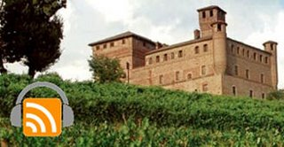

Torino (or Turin in English) is the capital of Piemonte, a region in Northern Italy surrounded on three sides by the Alps. Piemonte hosted the 2006 Olympic Winter Games, and is renown for its local specialties such as Alba's white truffle, prestigious wines such as Barolo and Asti Spumante, the Giandujachocolate, and a whole lot more. In this podcast interview, Angelo Feltrin of the Piemonte Tourism Office, summarizes some of the key attractions that this area has to offer to foreign visitors.